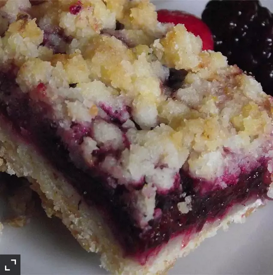

Berry Crumb Bars

Simple tutorial to make berry bars
Kids love them.
You can use any variety of berries that you like; we used raspberries in this recipe.
Ingredients
- 1 cup white sugar
- 1 teaspoon baking powder
- 3 cups all-purpose flour
- 1 cup shortening
- 1 egg
- 1 pinch salt
- 1 pinch ground cinnamon
- 4 cups raspberries
- ½ cup white sugar
- 3 teaspoons cornstarch
Steps
- Preheat the oven to 375 degrees F (190 degrees C). Grease a 13x9-inch pan.
- Combine 1 cup sugar, flour, baking powder, salt, ground cinnamon, shortening, and egg. The dough will be crumbly. Pat half of the dough into the prepared pan.
- Combine remaining 1/2 cup sugar, cornstarch, and berries. Place mixture over dough in pan. Crumble the remaining dough over the tops of the berries.
- Bake in the preheated oven until top is slightly browned, about 45 minutes.
Nutrition Facts
Per Serving: 312 calories; protein 3.3g; carbohydrates 43.5g; fat 14.4g; cholesterol 12.4mg; sodium 48.1mg. Full Nutrition